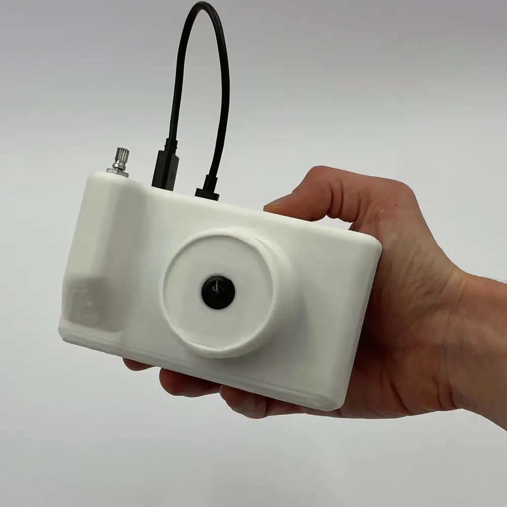
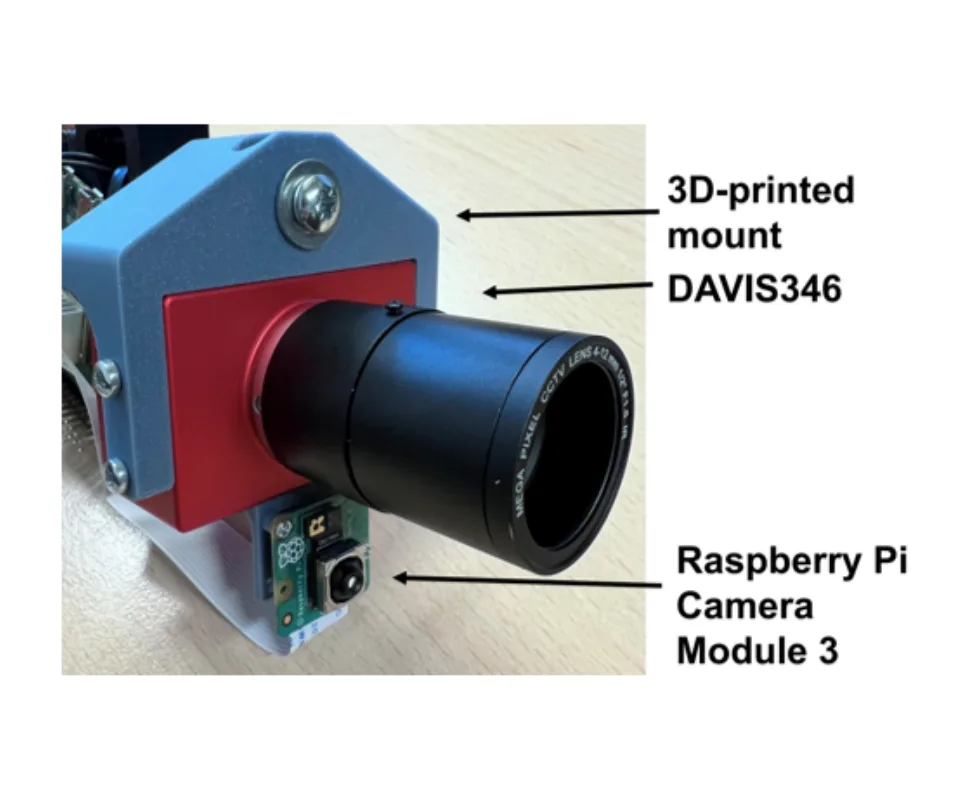

03
TinyGrad MNIST classifier
End-to-end deep learning pipeline in TinyGrad (MLP & CNN), deployed with WebGPU for real-time inference as you draw.
- TinyGrad
- WebGPU
- CNN
 Camera T-1 tangible geo-archival exploration
HCI · Hardware
Raspberry Pi 4 · Python · PCB
CHI 2026
Camera T-1 tangible geo-archival exploration
HCI · Hardware
Raspberry Pi 4 · Python · PCB
CHI 2026
 Raw2Event research paper reproduced on a Pi Zero
Reproduction · Vision
Raspberry Pi Zero · DVS-Voltmeter
Reproduction
TinyGrad MNIST in-browser inference
Lab · ML
TinyGrad · WebGPU
Live demo
Raw2Event research paper reproduced on a Pi Zero
Reproduction · Vision
Raspberry Pi Zero · DVS-Voltmeter
Reproduction
TinyGrad MNIST in-browser inference
Lab · ML
TinyGrad · WebGPU
Live demo
 Synapse browser-native RAG engine
Lab · AI
RAG · local LLM · JS
Live demo
Synapse browser-native RAG engine
Lab · AI
RAG · local LLM · JS
Live demo
 Ray-marching editor SDF scenes on the GPU
Lab · Graphics
WebGPU · WGSL · SDF
Live demo
Ray-marching editor SDF scenes on the GPU
Lab · Graphics
WebGPU · WGSL · SDF
Live demo
A handheld camera that retrieves archival photographs of the exact place where you stand.
I co-wrote a research paper about Camera T-1 and submitted it to ACM CHI 2026 (Conference on Human Factors in Computing Systems), the main international conference in Human-Computer Interaction. The paper describes the physical design of the device, the notions of spatial and temporal dissonance it relies on, and its tangible interaction workflow.
Historical photographs are kept in archives, far from the streets they show. On site, nothing connects a passer-by to what happened there before.
Camera T-1 brings the archive back to its location. It follows slow technology principles: you walk to the place, frame the scene and turn a physical dial to travel through the years.
Can a tangible device bridge the gap between individual and collective memory?
The device shows the same viewpoint at two moments in time. The gap between what you see and what the archive shows is what the paper calls spatial and temporal dissonance.


| Core | Raspberry Pi 4 |
|---|---|
| Display | RGB touch screen |
| Input | Rotary encoders · touch controls |
| Power | Custom PCB (TPS563200) |
| Software | Python · Tkinter · Linux |
| Dataset | 19k+ archival photos |
| Enclosure | 3D-printed with tactile controls |
My reproduction, on a Raspberry Pi Zero, of a paper that turns a standard camera into an event camera.
Raw2Event is a research paper by Z. Ning, E. Lin, S. R. Iyengar and P. Vandewalle (KU Leuven). I did not invent the method. I reproduced it on a Raspberry Pi Zero with a Camera Module 3, and I built the interactive simulation below to show why event cameras matter.
Two identical cars, same speed, same brakes. A child steps out from behind a parked van. Only the sensor differs: the event camera reacts to the first pixel that changes, while the frame camera has to wait for its next frames.
Illustrative model. Drag the time bar to step through it. The child appears 15 m ahead · frame path: next capture + 2 sharp frames + 50 ms inference · event path: ≈10 ms · then 100 ms actuation and 7.5 m/s² braking for both. Frame timing is randomized on each replay.

The same rocket launch recorded by a frame camera and by an event camera, side by side.
Video · International Centre for Neuromorphic Systems, Western Sydney University.
Event cameras record independent pixel changes with microsecond timestamps, so there is no motion blur and no redundant frame. Commercial sensors remain expensive, low resolution and without autofocus.
The paper reads raw Bayer frames straight from a Raspberry Pi Camera Module 3, bypasses the ISP, and converts them to events with the DVS-Voltmeter model, implemented in vectorized NumPy so it runs directly on the Pi. I reproduced this pipeline on a Raspberry Pi Zero.
Space-time cubes in .aedat4 format, where every event is stored as e = (x, y, t, p).
The original code is open source and the noise and contrast thresholds are configurable, which makes it a low-cost entry point into neuromorphic vision research for medtech, autonomous driving, drones and AR/VR.
A normal camera sends whole pictures at fixed times. An event camera sends no pictures: each pixel watches its own brightness and speaks up only when it changes. Raw2Event imitates that in software, starting from the raw frames of an ordinary camera.
The curve is the brightness of one pixel, sampled at every camera frame. The pixel remembers the level of its last event. When the brightness moves further than the threshold away from that memory, it fires an event and updates its memory. Lower the threshold and even small flicker fires events.


 Video demonstration · “Ma vision neuromorphique”
Video demonstration · “Ma vision neuromorphique”
| Platform | Raspberry Pi Zero |
|---|---|
| My part | Reproduction on the Pi Zero · interactive simulation on this page |
| Sensor | RPi Camera Module 3 (IMX708) |
| Model | DVS-Voltmeter · ISP bypass |
| Software | Python · vectorized NumPy |
| Output | .aedat4 space-time cube (x, y, t, p) |
| Reference | Z. Ning, E. Lin, S. R. Iyengar, P. Vandewalle, “Raw2Event: Converting Raw Frame Camera into Event Camera”, KU Leuven |
End-to-end deep learning pipeline in TinyGrad (MLP & CNN), deployed with WebGPU for real-time inference as you draw.
Privacy-first retrieval-augmented generation: drop PDFs, build a vector index and ask questions entirely client-side, with zero server telemetry.
Interactive 3D editor built on signed distance fields: add, blend and move primitives with real-time dynamic lighting.
Master's student at ESILV and the Institute for Future Technologies, in the Creative Technology / AI & Computer Graphics track. I build things end to end, from PCB and enclosure to firmware and interface, with a focus on computer vision, embedded electronics and robotics.
Studied engineering and startup management at Hanyang University in Seoul. Outside the lab, I practise MMA, boxing, competitive rugby, tennis and triathlon, plus video games, cinema, biotech and design.